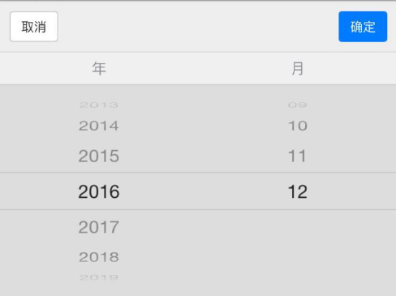

时间：2016-12-07
最近，在angularjs框架中需要使用到时间控件，用的地方比较多，所以用directive指令封装了一个mui的时间控件。代码如下：
angular.module('app')
.directive('btnDate', function() {
return {
restrict: 'A',
require: "ngModel",
link: function(scope, elem, attrs, ngModelCtr) {
var dom = elem.get(0);
dom.addEventListener('tap', function() {
var optionsJson = dom.getAttribute('data-options') || '{}';
var options = JSON.parse(optionsJson);
var id = dom.getAttribute('id');
angular.element('input').blur();
var picker = new mui.DtPicker(options);
picker.show(function(rs) {
var time = rs.text;
elem.val(time);
refresh();
picker.dispose();
});
}, false);
elem.on('blur keyup change', function() {
scope.$apply(refresh);
});
refresh();
function refresh() {
var time = elem.val();
ngModelCtr.$setViewValue(time);
}
}
};
});
html代码：
<input type="text" data-options='{}' readonly="readonly" btn-date placeholder="请选择" ng-model="endDate" />
效果如下：
年月日
<input type="text" data-options='{"type":"date"}' readonly="readonly" btn-date placeholder="请选择" ng-model="endDate" />
效果如下：
年月
<input type="text" data-options='"type":"month"' readonly="readonly" btn-date placeholder="请选择" ng-model="endDate" />
效果如下：
时分
<input type="text" data-options='"type":"time"' readonly="readonly" btn-date placeholder="请选择" ng-model="endDate" />
效果如下：
时段
<input type="text" data-options='{"type":"hour","customData":{"h":[{"text":"上午","value":"上午"},{"text":"下午","value":"下午"},{"text":"晚上","value":"晚上"}]},"labels":["年", "月", "日", "时段", "分"]}' readonly="readonly" btn-date placeholder="请选择" ng-model="endDate" />
效果如下：
以上html都需引入mui框架：
<link rel="stylesheet" type="text/css" href="../css/mui.picker.min.css" />
<script src="../js/mui.min.js"></script>
<script src="../js/mui.picker.min.js"></script>
ios系统中，同一个页面中有input文本框和时间控件同时存在，先点击input文本框输入文本，不关闭输入法，再继续点击时间控件，此时，输入法会遮住时间控件，所以，加上如下代码：
angular.element('input').blur();
blur()方法的意思是使input文本框失去焦点，当input文本框失去焦点时，输入法会自动关闭。
以上。